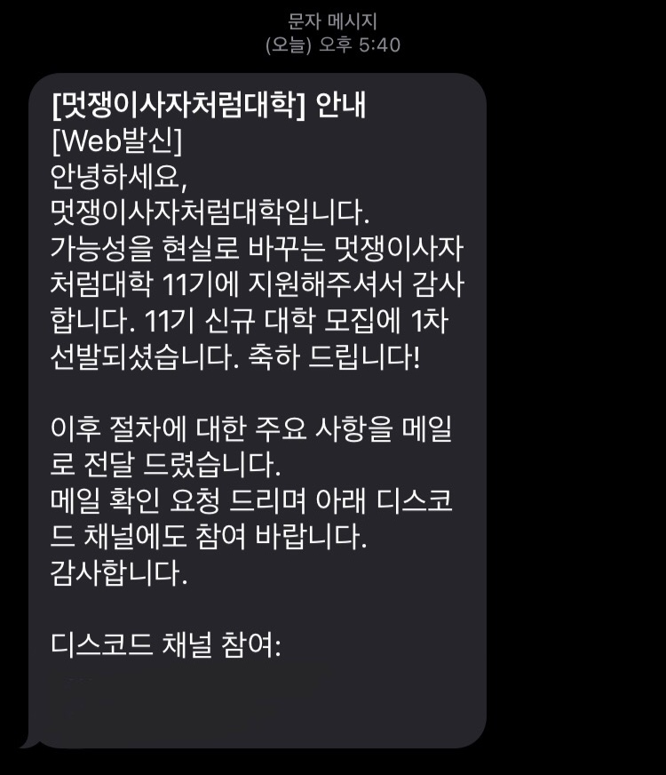

대학 진학 후의 번아웃
나는 엉뚱한 상상을 자주 하던 아이였다. 기억도 안 나는 어릴 시절부터 뭔가를 계속 상상하고, 그것을 실제로 만들고 싶다고 줄곧 생각했다. 간절히 바라면 현실이 된다는 말을 들어본 적이 있는가? 그 말이 맞았다. 초등학교 4학년, 햇빛이 따뜻하게 비치던 가을날. 난 운명처럼 처음 C언어를 접하게 되었다.
처음 접하는 C언어는 정말 재미있었다. 매일매일이 설렘이고 기쁨이였다. 새로운 것을 배운다는 설렘, 내 손으로 내가 상상하던 것을 만들 수 있다는 설렘, 내가 만든 프로그램이 다른 이들에게 도움이 될 수 있다는 설렘. 난 그렇게 코딩을 시작했고, 스무 살에 주변 사람들 모두의 반대에도 불구하고 소프트웨어과에 진학했다.
그렇게 패기 넘치게 소프트웨어과에 진학했지만, 첫 1년은 정말 힘들었던 기억이 난다. 대학교의 수업은 내가 원하는 방향과 정말 달랐다. 우선, 특정 교수님과 수업 방식이 맞지 않았고, 난 무언가를 만들고 싶었지만 언제나 과제로는 문법 실력을 파악하는 내 기준으로 의미없는 과제가 주어졌다. 설렘이었던 코딩은 어느새 의무가 되어갔다.
좋았던 게 싫어진다는 건, 굉장히 힘든 일이였다. 매일매일 맞지 않는 수업 속에서 나를 잃어가는 느낌이였다. 결국 번아웃이 왔다. 번아웃이라는건 생각보다 사람을 갉아먹는 질병이였다. 매일같이 생각했다. "그렇게 코딩을 하며 설렜던 과거는 어린 날의 치기어린 감정일 뿐이었나?" "나는 코딩과 맞는 사람이 아닌가?" 난 전과를 진지하게 고민하기 시작했다. 부모님께 뭐라고 말씀드려야 할지도, 내가 좋아서 와놓고 적응을 못하는 나도, 의미없는 과제들도, 모두가 싫었다. 도망치고 싶었다.
인생의 전환점
고등학교 때도 코딩 동아리 부장으로 활동해 본 나는 동아리 활동이 얼마나 의미있는지 잘 알고 있었다. 그래서 대학교에 진학한 후에도 코딩 동아리에 들어가려고 찾아보았다. 하지만 코딩 동아리는 존재하지 않았다(..!) 없으면 만들면 된다고 생각했던 나였기에, 코딩 동아리를 만드려고 에브리타임에 글을 올렸다. 그리고 그 글 하나가, 내 인생의 전환점이 되어주었다.
코딩 동아리를 만들고 싶다는 글에, 멋쟁이사자처럼이라는 동아리를 운영하셨던 선배님께서 연락이 온 것이다. 운영 문제때문에 현재는 동아리가 사라졌지만, 다시 동아리를 되살려 운영해볼 생각이 있냐는 연락이였다. 그리고 그 동아리는 내가 그토록 바랬던, 내가 상상하던 것을 실제로 만들 수 있는 동아리였다. 그걸 안 순간, 오랜만에 어린 시절의 나처럼 가슴이 뛰었다. 드디어 내가 진정으로 원하는게 무엇인지를 깨닫는 순간이었다.
"그래, 나는 내가 상상만 했던 것들을 직접 만들고 싶어. 내가 만든 것들이 다른 사람에게 도움이 되는 걸 보고 싶어. 난 코딩이 좋아. 무언가를 만드는 것이 좋아. 저 동아리를 해보고 싶어."
하지만 동아리를 새로 만드는 건 생각보다 어려웠다. 선배님과 밥을 먹으며, 동아리 대표를 뽑는 기준에 대해 들었다. 뽑는 기준은 세가지였다. [코딩테스트, 면접, 서류]. 솔직히 조금 아득해졌다. 이것들을 다 뚫고 동아리를 만들 수 있을까? 싶었다. 하지만, 그럼에도 도전해야만 했다. 난 멋쟁이사자처럼을 꼭 하고 싶었다. 드디어 내가 진정으로 하고 싶은 것이 뭔지 찾았는데, 이 기회를 놓칠 수 없었다. 전공이 싫어 도망친 나에겐 남는 게 시간이였고 그렇게 막무가내로 준비를 시작했다.
1년 좀 안 되는 시간동안, 멋쟁이사자처럼 홈페이지에 정말 많이 들어가봤다. 코딩 테스트 준비를 하다가 지치면 멋쟁이사자처럼 해커톤 사진을 보면서 힘을 냈다. 너무너무 하고 싶었다. 저 자리에 내가 있었으면 했다. 내 손으로 결과물을 만들어내는 것을 보고 싶었다. 어느새 멋쟁이사자처럼은 단순한 동아리가 아닌 내 인생 목표가 되어가고 있었다.
멋대 11기 신규 대학 지원과 합격 발표
11월 말, 드디어 11기 신규 대학 모집 공고가 떴다. 해야 할 모든 과제를 다 제쳐두고 5일을 꼬박 밤을 새며 서류를 준비했다. 내가 얼마나 멋쟁이사자처럼을 하고 싶은지, 내 진심을 보여줘야 했다. 나이나 학년이 나에게 불리한 요소로 작용할 수 있다는 생각을 했기 때문에, 정말 진심을 다해 서류를 작성하고 마침내 제출했다.
 종강날이었던 12월 14일, 1차 합격 발표가 나왔다. 너무너무 행복해서 그대로 주저앉아서 펑펑 울었다. 너무 행복했다. 나도 할 수 있다는 희망이 보이기 시작했다.사실 그 다음은 잘 기억나지 않는다. 종강도 했겠다, 남는 시간을 전부 멋쟁이사자처럼에 투자했다. 이를 악물고 노력했다. 그렇게 며칠이 흘렀을까, 나는 최종합격 발표를 들을 수 있었다.
기뻐서 울면서 운영진 선발을 준비하던게 생각난다. 그래, 정말 행복했었지. 그리고 지금도 정말 행복하다. 물론 글을 쓰는 현재는 아직 해커톤도 해보지 못했고, 부원들을 교육하는 단계 중에 있다. 하지만 멋사는 나에게 이미 많은 것들을 주었다.
잃어버렸던 코딩에 대한 즐거움과 설렘을 되찾아주었고, 번아웃을 극복하도록 도와주었고, 내가 정말 좋아하는 것이 뭔지 찾을 수 있었고, 나도 할 수 있다는 자신감을 얻었다. 모두가 멋사가 나에게 선물해준 것들이다. 멋쟁이사자처럼이, 나를 바꾸어 주었다.
물론 늘 좋은 일만 있던 것은 아니였다. 우려했던 대로 나이와 학년으로 인해 익명 SNS에서 수없이 욕을 먹었고, 다른 힘든 일도 여러 가지 있었다. 그 부분은 다음 포스팅에서 다루어 볼 예정이다.
하지만, 여전히 멋사는 나에게 있어 정말 소중한 동아리이다. 내가 나이와 학년으로 도전을 망설였다면, 지금의 나는 없었을 것이다. 그러니까, 나는 이 글을 보는 여러분들도 도전하고 싶은 게 있다면, 상황이 어떻든 망설이지 말고 도전해 보았으면 좋겠다.